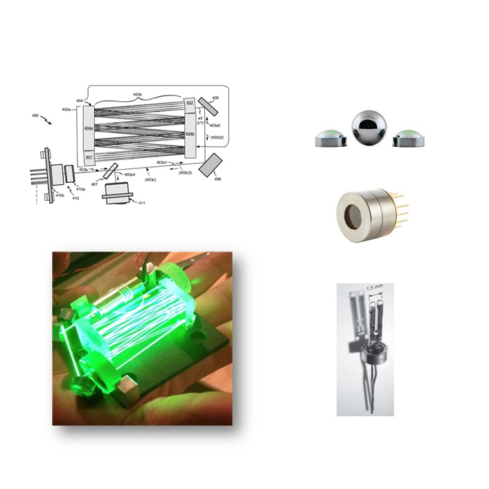
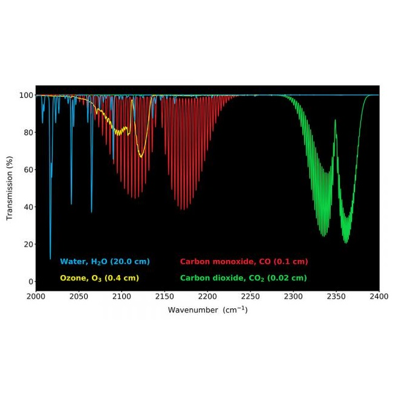
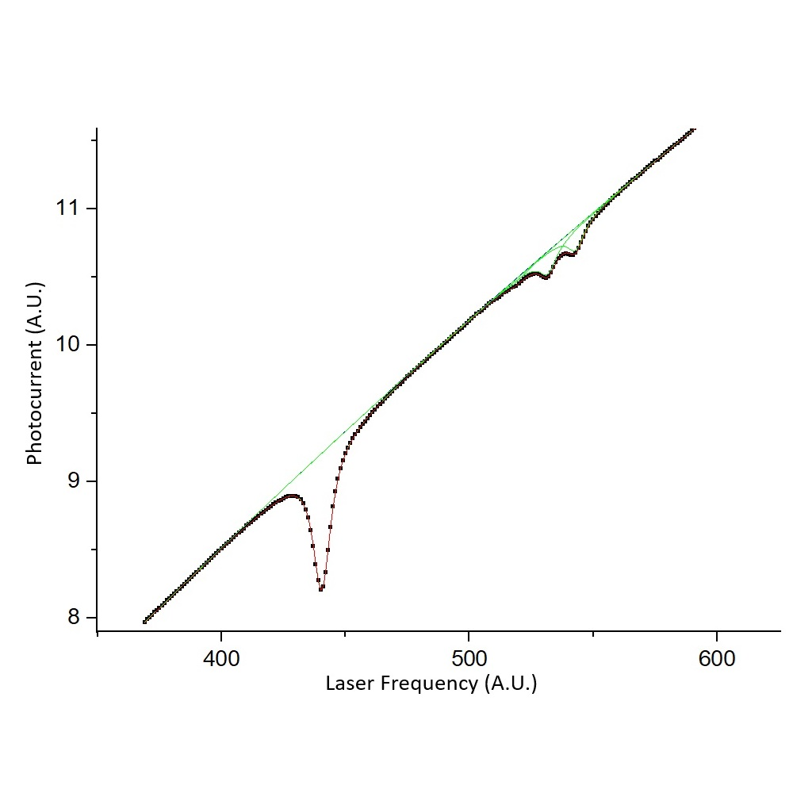
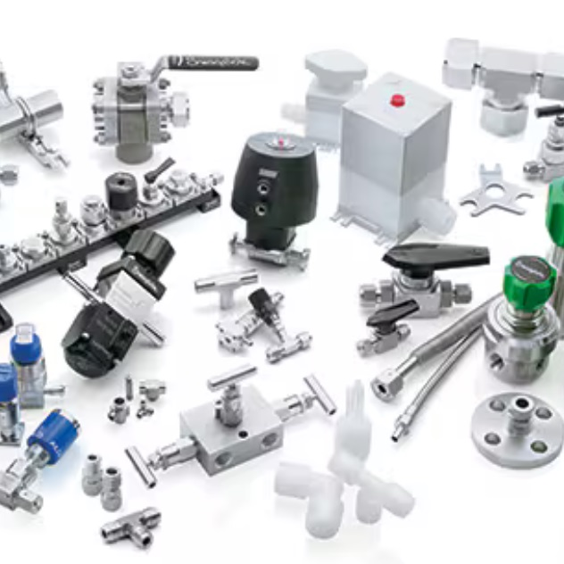
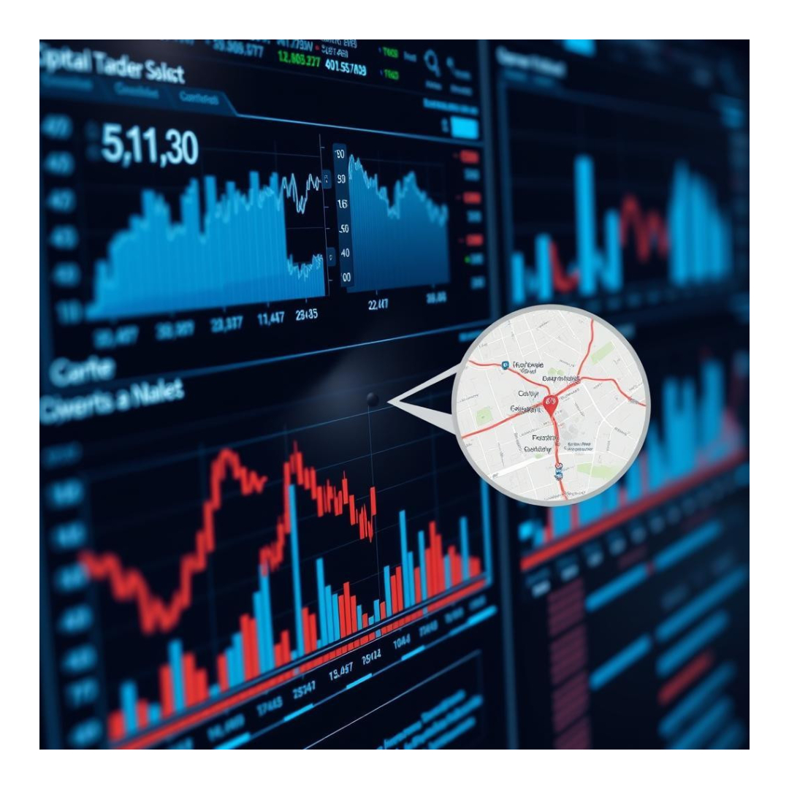
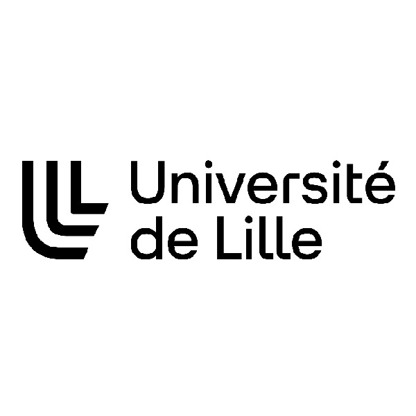
Design of a continuous wave cavity ring-down spectrometer coupled to flash photolysis, near-infrared diode laser spectroscopy of HO2, simultaneous OH monitoring by Laser Induced Fluorescence, kinetics and dynamics of reactions involving HO2 and OH. Trace gas sensing of formaldehyde by wavelength modulated spectroscopy in the middle infrared.
Design, test, and successful demonstration in a 230 MW coal-fired power plant of an In Situ Optical Absorption Mercury Continuous Emission Monitor. Use of the ultraviolet atomic absorption from a mercury lamp by the elemental mercury Hg0 and a UV LED background correction system. This cross-stack approach allowed the in situ and continuous quantification of Hg0 during the operation of the power plant.
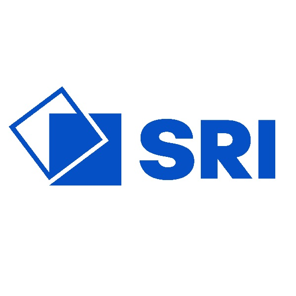
Laser Spectroscopy of Reactive Species - Ozone Photodissociation and OH Radical Relaxation Studies - Laboratory pump/probe experiments including multiple pulsed lasers (excimer, dye, OPO) and sophisticated timing schemes to measure the rate constants of the deactivation of OH(ν).
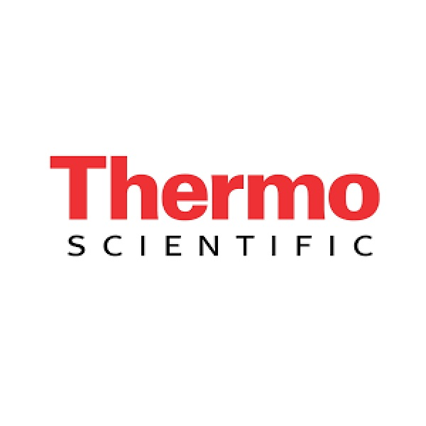
R&D and development of new laser-based gas analyzers operating in the Middle Infrared via Difference Frequency Generation and measuring greenhouse gases and atmospheric pollutants. Use of Laser Induced Fluorescence (LIF) to quantify formaldehyde with parts per trillion precision.
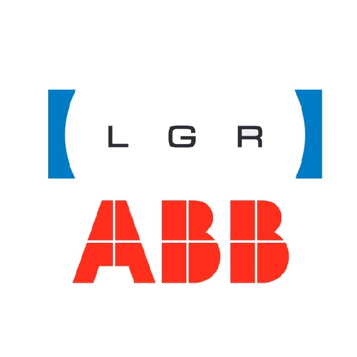
R&D and development of new laser-based gas analyzers relying on Off-Axis Incoherent Cavity Output Spectroscopy (ICOS).
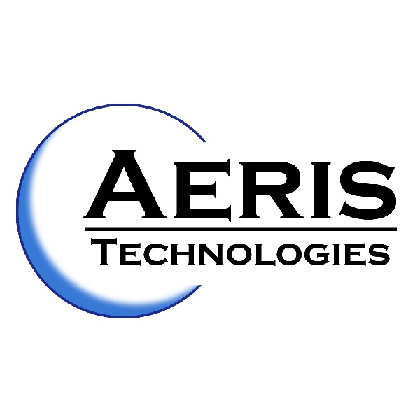
Development and commercialization of portable, rugged, power-efficient Mid-IR laser trace gas analyzers for a wide array of applications encompassing Greenhouse Gases and Air Pollution Monitoring, Isotopic Measurements, and Atmospheric & Combustion Chemistry.
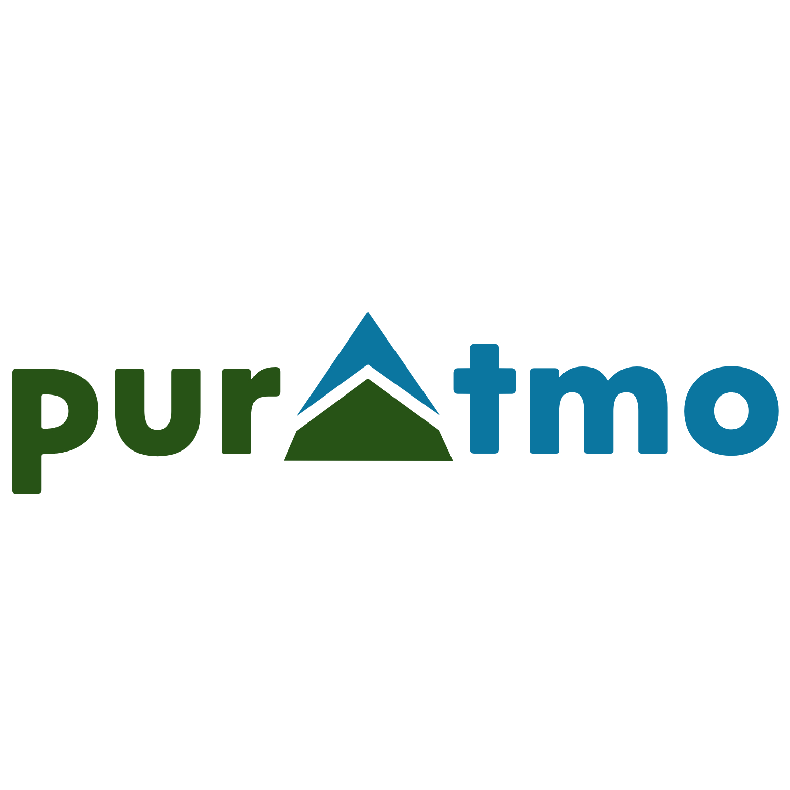
Your Instrumental Partner for your R&D and product development projects in laser-based gas analysis.